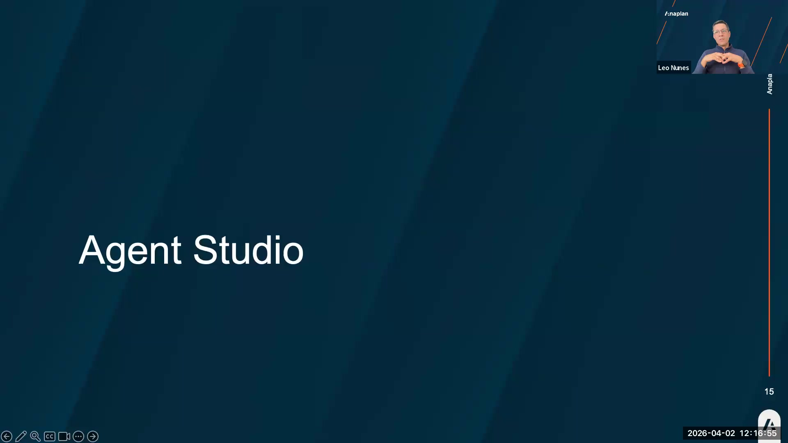
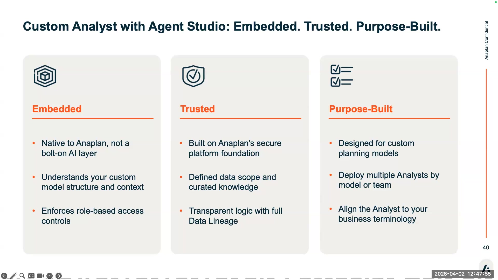

Agent Studio + Custom Analyst
Admin architecture, security model, configuration walkthrough + Labs 3A, 3B
What Agent Studio Is
Agent Studio is the administration layer for all Anaplan AI products. It is not an AI tool itself — it is the control plane that governs which users can access AI, which workspaces have CoModeler enabled, and how Custom Analysts are configured.
It was released after CoPlanet was sunsetted. The vision: a single admin destination for every Anaplan AI capability, current and future.

Agent Studio — the admin layer for all Anaplan AI products (session slide 15)

Custom Analyst with Agent Studio — three product pillars: Embedded, Trusted, Purpose-Built (slide 40)
Architecture
| Layer | Who | What They Control |
|---|---|---|
| Tenant Admin | Customer IT / Anaplan admin | Assigns AI Admin role to specific users. One-time setup per tenant. |
| AI Admin | Partner or customer power user | Enables CoModeler per workspace. Creates and configures Custom Analysts. |
| End User | Business user / planner | Queries Custom Analysts. Uses CoModeler if assigned to an enabled workspace. |
As a partner, you can be assigned the AI Admin role on a customer's tenant — as long as the customer has licensed AI. This is different from Integration Admin, which is home-tenant locked. Partners can configure and manage AI on customer tenants directly.
Today, you will only see CoModeler inside your Carter (partner) tenant, not on customer tenants. This is by design — Anaplan wants customers to purchase CoModeler. Once the customer has licensed it, you can use it in their tenant.
CoModeler Configuration in Agent Studio
From Agent Studio → CoModeler tab, an AI Admin can:
- Enable or disable CoModeler for specific workspaces (workspace-level granularity)
- Add new workspaces to the enabled list
- All workspace administrators in enabled workspaces automatically get CoModeler access
Custom Analyst Architecture
Custom Analyst is the Anaplan Analyst that you configure for your custom modules. Same underlying technology as the pre-built Finance Analysts — the difference is that you define the data scope, questions, context, and vocabulary.
How it works:
Security Model
This is a key customer question. The answer is clear:
- Queries run as the end user — not as the AI Admin or a service account
- Row-level security is enforced — if a user can't see a number in Anaplan, the analyst can't tell them that number
- Scope is pre-configured — the analyst only looks at modules and line items you explicitly add to its configuration. Nothing else is accessible.
- No hallucination path — if Anaplan doesn't have the answer, the analyst returns "I can't answer that" rather than generating a plausible-sounding wrong number.
Custom Analyst Configuration
From Agent Studio → Analysts → New Custom Analyst:
- Name & AI Context — Give the analyst a name and write a description of what this configuration is for. The more detail here, the better the LLM understands context. Example: "This is a revenue planning analyst for NovaTrend's consumer goods FP&A model covering regional and product-level forecast and actuals data."
- Data Sources — Add modules and select specific line items. Each line item gets a semantic description. Good semantics = good answers.
- Suggested Questions — Pre-configure 5–10 questions that the business uses naturally. Use the customer's vocabulary, not model builder vocabulary.
- Vocabulary — Add definitions for business terms. "OPEX = operating expenditure, including [specific line items in this model]."
From Lab 2C, you exported a line item dictionary. Paste that into ChatGPT or Claude and ask: "Enrich these line item descriptions for use as semantic definitions in a conversational AI system. Make each description clear to a non-technical business user." Then import the enriched descriptions into your Custom Analyst. This is the workflow Leo demonstrated.
Current Limitations
- Context window: ~5 follow-up questions per conversation before context is lost
- No cross-analyst queries — analysts cannot call each other
- No API access — cannot be integrated externally yet
- Visualizations are auto-generated (time series → line chart, rank → bar chart) but not configurable
- No conversation history saved — each session starts fresh
- LLM transition to Claude targeted H2 2026 — reconfiguration should not be required
Lab 3A — Explore Agent Studio
Objective: Confirm Agent Studio access, review CoModeler workspace configuration, and explore the Analysts list.
Steps
- Log into Anaplan with an account that has the AI Admin role.
- Click the top-right dropdown → Agent Studio.
- If you don't see Agent Studio, your tenant admin has not assigned you the AI Admin role yet. Contact your workspace admin.
- Navigate to the CoModeler tab. Confirm your workspace appears in the enabled list.
- Navigate to the Analysts tab. Review any existing configurations.
- Click on a pre-built Anaplan Analyst (Finance or another if available). Note the data source configuration — how many modules and line items are pre-loaded?
- Return to Analysts → note the configuration structure (name, AI context, data sources, suggested questions).
Debrief
- Which workspaces are currently enabled for CoModeler in your tenant?
- How many pre-built analysts are available? What functions do they cover?
- What is the AI Context field in the pre-built analyst? How detailed is it?
Lab 3B — Configure a Custom Analyst
Objective: Create a working Custom Analyst configuration targeting NovaTrend's revenue module.
Steps
- In Agent Studio → Analysts → Create New Custom Analyst.
- Name: 'NovaTrend Revenue Analyst'.
- AI Context: Write 2–3 sentences describing NovaTrend's business (use the case study). Include: industry, planning scope, key metrics the analyst should understand.
- Add Data Source: Select the module you built in Lab 2B (or any revenue/FP&A module available).
- Select 3–5 line items. For each, write a semantic description using business language (not model builder language).
- Add 3 Suggested Questions that a NovaTrend planner would actually ask. Use their language: 'What is the forecast revenue for North America in Q3 2026?'
- Save the configuration.
- Open the analyst interface and test all 3 suggested questions. Note which ones return good answers and which fail.
- For any failed question, adjust the semantic description of the relevant line item and retest.
Debrief
- Did all 3 test questions return correct answers? If not, what was wrong?
- Did the analyst provide a source link showing where the data came from?
- What semantic description change had the most impact on answer quality?
- If a user asked a question outside your configured scope, what did the analyst say?